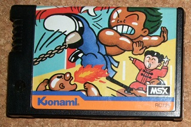
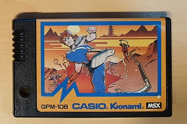
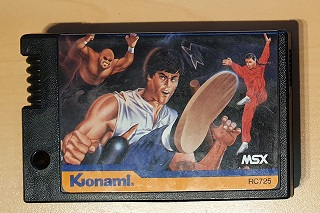
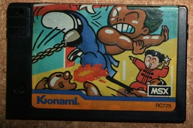
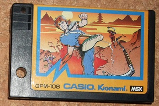
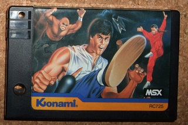
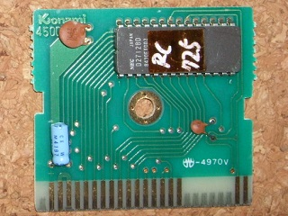
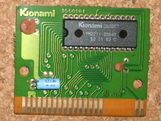
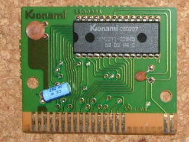
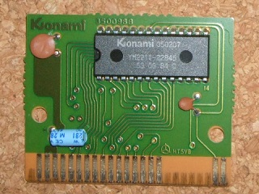
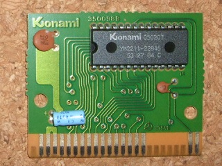
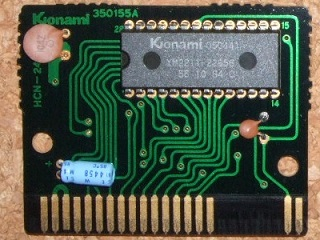
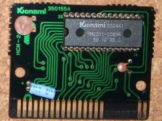
| Type | 基板番号 | ROM番号 | ROM内容 |
| 旧ケース／アニメ調 | 430023B98A | EEPROM RC725 | 旧 |
| 新ケース／アニメ調 | 350098A | 050207 / YM2211-22845 / 52 11 82 C | 旧 |
| 新ケース／カシオOEM版 | 350098A | 050207 / YM2211-22845 / 53 84 C | 旧 |
| 新ケース／リアル調1 | 350098B | 050207 / YM2211-22845 / 53 03 84 C | 旧 |
| 新ケース／リアル調2 | 350098B | 050207 / YM2211-22845 / 53 27 84 C | 旧 |
| 新ケース／リアル調3 | 350155A | 050441 / YM2211-22856 / 56 10 84 C | 新 |
| 新ケース／リアル調4 | 350155A | 050441 / YM2211-22856 / 56 10 85 C | 新 |
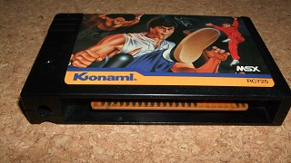
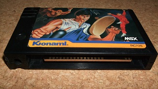
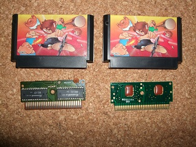
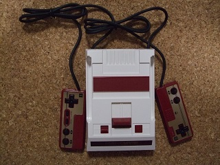
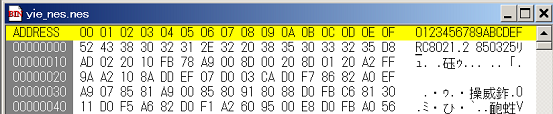
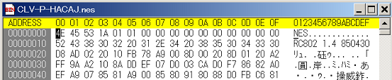